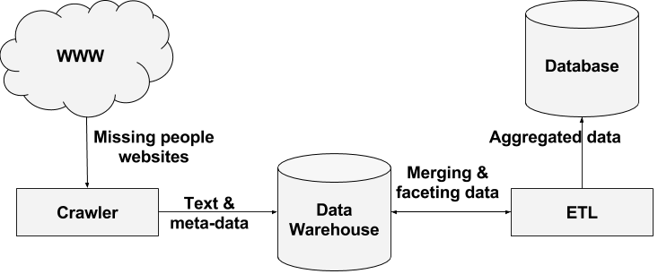
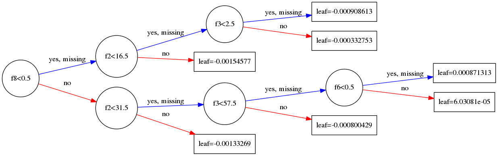

Myosotis: An ecosystem focused on the missing people problem in Brazil
Currently, this research are divided in three experimental projects:
- Online database aggregation system: The first prototype is available at www.projeto-myosotis.com.br
- Open Linked data
- Image classification

Online database aggregation system
According to estimates from the Federal Government, 200,000 people disappear from their homes every year in Brazil. Aiming to create an unified register of missing people data and reported cases, and to promote information sharing among network members, we developed Myosotis.
This information system performs analysis inside an unified database about Brazilian missing people. Data is collected autonomously from different sources and our first empirical results show that Myosotis system outperforms all existent solutions in the country, including the official database from Brazilian government, by up to 122% when considering the number of distinct registers.
Also, our pattern analysis module is capable of giving insights about what people's characteristics make them more statistically susceptible to disappear. All this consolidated information and the aggregated database as well are publicly available through a friendly open-source web application and a public API.

We published a paper "
Myosotis: An Information System Applied to Missing People Problem" describing how we developed this system, first in the country, and the main challenges that this system still needs to overcome.
Open Linked Data
We are linking the unified missing people database to available information across several sources in the internet. Modeling registers as a big graph with its own ontologies.
Image Classification
We are using machine learning techniques to classify and collect images from missing people database, automating searches inside this public dataset.
TransReport: Crowdsourcing for improving the quality of bus services
We developed an app and an API that receive, in real-time, complaints about the internal conditions and general issues regarding the public transportation.
A real study-case showed that TransReport was able to easily connect people complaints to the transport regulatory agencies in Rio de Janeiro. Besides, we got reliable quantitative results about the problems.
Our project won a big data challenge in UFRJ and we presented the paper "
TransReport: Collaborative Supervision of the Public Transportation" at ACM Symposium of Applied Computing.